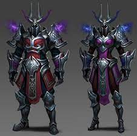

Le guerrier est une classe disponible ayant de très bon atouts défensifs et plus tard offensif offrant une grande panoplie de compétences défensives pour le joueur. Le début de jeu est compliqué en raison du manque d'offensif pour la classe Gardien en revanche il est beaucoup plus aisé pour les Berserker de faire des dégâts en raison de l'orientation de leur kit de compétences leur offrant une très grande polyvalence au niveau de leurs dégâts.
Gardien et Berserker